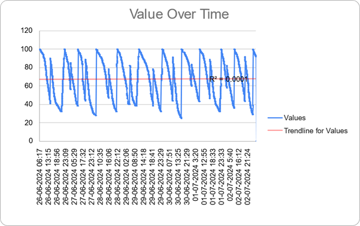
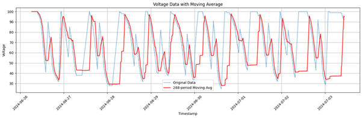
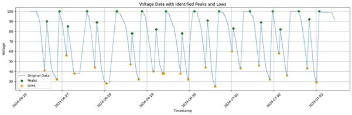
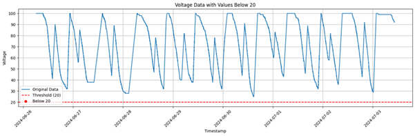
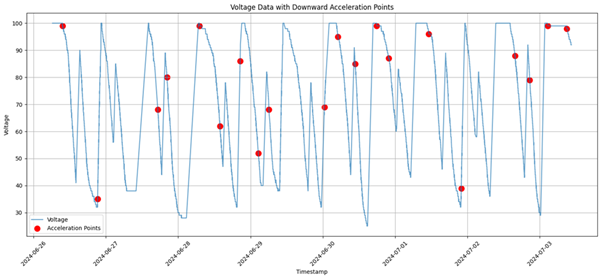
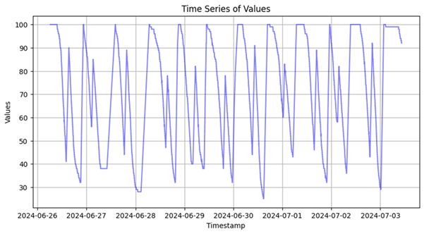
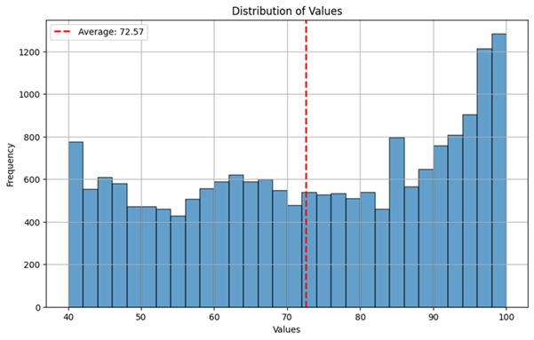
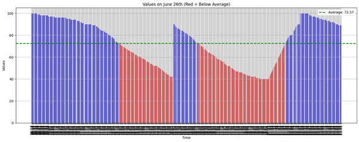

ASSIGNMENT 1
GRAPH USING EXCEL

CONCLUSIONS:
-
The values change regularly over time but always stay above 20,
showing consistent performance.
-
The trendline is nearly flat, meaning there's no significant increase
or decrease overall.
-
The lowest points happen at specific times, though they never reach
concerning levels below 20.
-
The rises and falls seem to follow a loose repeating pattern that
might be worth examining further.
-
The moving average confirms the general stability while making the
long-term pattern easier to see.
GRAPH USING PYTHON
1. Easy problem: Import this data into a Python Data frame Plot the same
chart as you did in excel using your favorite plotting library (a).
create a 5-day moving average on the plot (b). Use python Find local
peaks and lows in the data. tabulate them (c). Find out every instance
the Voltage went below 20 and tabulate it
CODE:
import pandas as pd
import numpy as np
import matplotlib.pyplot as plt
from scipy.signal import find_peaks
from tabulate import tabulate
df = pd.read_csv('Sample_Data.csv')
df['Timestamp'] = pd.to_datetime(df['Timestamp'], format='%d-%m-%Y %H:%M')
df = df.sort_values('Timestamp').reset_index(drop=True)
window_size = 288 # Adjust based on your sampling frequency (288 = 12 days for hourly data)
df['Moving_Avg'] = df['Values'].rolling(window=window_size, min_periods=1).mean()
plt.figure(figsize=(15, 5))
plt.plot(df['Timestamp'], df['Values'], label='Original Data', alpha=0.5)
plt.plot(df['Timestamp'], df['Moving_Avg'], label=f'{window_size}-period Moving Avg', color='red')
plt.title('Voltage Data with Moving Average')
plt.xlabel('Timestamp')
plt.ylabel('Voltage')
plt.legend()
plt.grid()
plt.xticks(rotation=45)
plt.tight_layout()
plt.show()
OUTPUT

peaks, * = find*peaks(df['Values'], prominence=5) # Adjust prominence as needed
lows, * = find*peaks(-df['Values'], prominence=5) # Find valleys by inverting
peaks_table = df.iloc[peaks][['Timestamp', 'Values']]
lows_table = df.iloc[lows][['Timestamp', 'Values']]
plt.figure(figsize=(15, 5))
plt.plot(df['Timestamp'], df['Values'], label='Original Data', alpha=0.5)
plt.scatter(peaks_table['Timestamp'], peaks_table['Values'], color='green', label='Peaks')
plt.scatter(lows_table['Timestamp'], lows_table['Values'], color='orange', label='Lows')
plt.title('Voltage Data with Identified Peaks and Lows')
plt.xlabel('Timestamp')
plt.ylabel('Voltage')
plt.legend()
plt.grid()
plt.xticks(rotation=45)
plt.tight_layout()
plt.show()
print("Peaks Table:")
print(tabulate(peaks_table, headers='keys', tablefmt='psql', showindex=False))
print("\nLows Table:")
print(tabulate(lows_table, headers='keys', tablefmt='psql', showindex=False))
OUTPUT

Peaks Table:
| Timestamp |
Values |
| 2024-06-26 15:23:00 |
90 |
| 2024-06-26 22:31:00 |
100 |
| 2024-06-26 22:39:00 |
100 |
| 2024-06-27 03:16:00 |
85 |
| 2024-06-27 14:09:00 |
100 |
| 2024-06-27 14:12:00 |
100 |
| 2024-06-27 19:43:00 |
89 |
| 2024-06-27 19:45:00 |
89 |
| 2024-06-28 06:53:00 |
100 |
| 2024-06-28 07:01:00 |
100 |
| 2024-06-28 15:40:00 |
78 |
| 2024-06-28 15:42:00 |
78 |
| 2024-06-28 21:11:00 |
100 |
| 2024-06-29 05:23:00 |
82 |
| 2024-06-29 05:25:00 |
82 |
| 2024-06-29 10:52:00 |
100 |
| 2024-06-29 20:01:00 |
78 |
| 2024-06-29 20:03:00 |
78 |
| 2024-06-30 03:00:00 |
100 |
| 2024-06-30 10:28:00 |
91 |
| 2024-06-30 16:56:00 |
100 |
| 2024-07-01 01:03:00 |
83 |
| 2024-07-01 01:07:00 |
83 |
| 2024-07-01 10:29:00 |
100 |
| 2024-07-01 16:45:00 |
89 |
| 2024-07-01 23:15:00 |
100 |
| 2024-07-02 03:42:00 |
82 |
| 2024-07-02 14:07:00 |
100 |
| 2024-07-02 20:03:00 |
92 |
| 2024-07-03 01:41:00 |
100 |
Lows Table:
| Timestamp |
Values |
| 2024-06-26 14:05:00 |
41 |
| 2024-06-26 20:57:00 |
32 |
| 2024-06-26 21:13:00 |
32 |
| 2024-06-27 02:24:00 |
56 |
| 2024-06-27 02:33:00 |
56 |
| 2024-06-27 06:55:00 |
38 |
| 2024-06-27 06:59:00 |
38 |
| 2024-06-27 18:32:00 |
44 |
| 2024-06-27 18:33:00 |
44 |
| 2024-06-28 01:05:00 |
28 |
| 2024-06-28 01:06:00 |
28 |
| 2024-06-28 14:51:00 |
47 |
| 2024-06-28 19:21:00 |
32 |
| 2024-06-28 19:28:00 |
32 |
| 2024-06-29 03:50:00 |
40 |
| 2024-06-29 09:03:00 |
38 |
| 2024-06-29 09:03:00 |
38 |
| 2024-06-29 09:06:00 |
38 |
| 2024-06-29 09:15:00 |
38 |
| 2024-06-29 09:41:00 |
38 |
| 2024-06-29 19:05:00 |
38 |
| 2024-06-29 23:24:00 |
32 |
| 2024-06-29 23:29:00 |
32 |
| 2024-06-30 09:13:00 |
44 |
| 2024-06-30 14:42:00 |
25 |
| 2024-06-30 14:48:00 |
25 |
| 2024-07-01 00:19:00 |
60 |
| 2024-07-01 05:08:00 |
43 |
| 2024-07-01 15:36:00 |
46 |
| 2024-07-01 21:41:00 |
32 |
| 2024-07-02 02:55:00 |
58 |
| 2024-07-02 07:26:00 |
36 |
| 2024-07-02 18:54:00 |
43 |
| 2024-07-02 18:55:00 |
43 |
| 2024-07-03 00:09:00 |
29 |
threshold = 20
below_threshold = df[df['Values'] < threshold]
plt.figure(figsize=(15, 5))
plt.plot(df['Timestamp'], df['Values'], label='Original Data')
plt.axhline(y=threshold, color='r', linestyle='--', label=f'Threshold ({threshold})')
plt.scatter(below_threshold['Timestamp'], below_threshold['Values'], color='red', label=f'Below {threshold}')
plt.title(f'Voltage Data with Values Below {threshold}')
plt.xlabel('Timestamp')
plt.ylabel('Voltage')
plt.legend()
plt.grid()
plt.xticks(rotation=45)
plt.tight_layout()
plt.show()
print(f"\nInstances Below {threshold}:")
print(tabulate(below_threshold[['Timestamp', 'Values']],
headers='keys', tablefmt='psql', showindex=False))
OUTPUT

1. Find every instance where the downward slope accelerates in each
downward cycle and print the timestamp
CODE:
import pandas as pd
import numpy as np
import matplotlib.pyplot as plt
from tabulate import tabulate
df = pd.read_csv('Sample_Data.csv')
df['Timestamp'] = pd.to_datetime(df['Timestamp'], format='%d-%m-%Y %H:%M')
df = df.sort_values('Timestamp').reset_index(drop=True)
df['First_Deriv'] = df['Values'].diff()
df['Second_Deriv'] = df['First_Deriv'].diff()
downward_cycles = df[df['First_Deriv'] < 0].copy()
downward_cycles['Cycle_ID'] = (downward_cycles['Timestamp'].diff() > pd.Timedelta('1h')).cumsum()
acceleration_points = []
for cycle_id, group in downward_cycles.groupby('Cycle_ID'):
acceleration_candidates = group[group['Second_Deriv'] < 0]
if not acceleration_candidates.empty:
max_accel_point = acceleration_candidates.loc[acceleration_candidates['Second_Deriv'].idxmin()]
acceleration_points.append(max_accel_point)
accel_df = pd.DataFrame(acceleration_points)[['Timestamp', 'Values', 'First_Deriv', 'Second_Deriv']]
accel_df = accel_df.sort_values('Timestamp').drop_duplicates()
plt.figure(figsize=(15, 7))
plt.plot(df['Timestamp'], df['Values'], label='Voltage', alpha=0.7)
plt.scatter(accel_df['Timestamp'], accel_df['Values'], color='red', s=100, label='Acceleration Points')
plt.title('Voltage Data with Downward Acceleration Points')
plt.xlabel('Timestamp')
plt.ylabel('Voltage')
plt.legend()
plt.grid()
plt.xticks(rotation=45)
plt.tight_layout()
plt.show()
print("Downward Acceleration Points:")
print(tabulate(accel_df, headers=['Timestamp', 'Value', 'Slope', 'Acceleration'], tablefmt='psql', floatfmt=".2f", showindex=False))
OUTPUT:

Downward Acceleration Points:
| Timestamp |
Value |
Slope |
Acceleration |
| 2024-06-26 09:37:00 |
99 |
-1.00 |
-2.00 |
| 2024-06-26 21:16:00 |
35 |
-1.00 |
-3.00 |
| 2024-06-27 17:15:00 |
68 |
-15.00 |
-15.00 |
| 2024-06-27 20:16:00 |
80 |
-1.00 |
-2.00 |
| 2024-06-28 07:01:00 |
99 |
-1.00 |
-1.00 |
| 2024-06-28 13:49:00 |
62 |
-2.00 |
-3.00 |
| 2024-06-28 20:35:00 |
86 |
-1.00 |
-1.00 |
| 2024-06-29 02:35:00 |
52 |
-5.00 |
-5.00 |
| 2024-06-29 06:07:00 |
68 |
-4.00 |
-4.00 |
| 2024-06-30 00:34:00 |
69 |
-1.00 |
-2.00 |
| 2024-06-30 05:00:00 |
95 |
-1.00 |
-2.00 |
| 2024-06-30 10:43:00 |
85 |
-1.00 |
-2.00 |
| 2024-06-30 17:54:00 |
99 |
-1.00 |
-1.00 |
| 2024-06-30 21:48:00 |
87 |
-1.00 |
-2.00 |
| 2024-07-01 11:09:00 |
96 |
-1.00 |
-2.00 |
| 2024-07-01 21:57:00 |
39 |
-1.00 |
-3.00 |
| 2024-07-02 15:44:00 |
88 |
-1.00 |
-2.00 |
| 2024-07-02 20:39:00 |
79 |
-1.00 |
-2.00 |
| 2024-07-03 02:38:00 |
99 |
-1.00 |
-1.00 |
| 2024-07-03 08:54:00 |
98 |
-1.00 |
-1.00 |
ASSIGNMENT 2:
1. Read the data into a notebook and make into a dataframe
CODE:
import pandas as pd
import matplotlib.pyplot as plt
import numpy as np
df = pd.read_csv('Sample_Data.csv')
df['Timestamp'] = pd.to_datetime(df['Timestamp'], format='%d-%m-%Y %H:%M')#converting timestamp data to datetime format
df.info()
df.head()
|
Values |
Timestamp |
| 0 |
100 |
2024-06-26 06:17:00 |
| 1 |
100 |
2024-06-26 06:18:00 |
| 2 |
100 |
2024-06-26 06:18:00 |
| 3 |
100 |
2024-06-26 06:18:00 |
| 4 |
100 |
2024-06-26 06:19:00 |
DATA ANALYSIS
CODE:
import pandas as pd
import numpy as np
import matplotlib.pyplot as plt
import seaborn as sns
from scipy import stats
# Preprocess the data to make it usable
# There may be some outliers and/or anomalies in the data that may cause problem, remove them
print(df['Values'].describe())
plt.figure(figsize=(10, 5))
plt.plot(df['Timestamp'], df['Values'], 'b-', alpha=0.5)
plt.title('Time Series of Values')
plt.xlabel('Timestamp')
plt.ylabel('Values')
plt.grid(True)
plt.show()
# Removing outliers based on graph
df_clean = df[(df['Values'] >= 40) & (df['Values'] <= 110)].copy()
print(f"\nOriginal data points: {len(df)}")
print(f"Cleaned data points: {len(df_clean)}")
print(f"Outliers removed: {len(df) - len(df_clean)}")
OUTPUT
count 21919.000000
mean 67.326292
std 21.794677
min 25.000000
25% 47.000000
50% 68.000000
75% 88.000000
max 100.000000
Name: Values, dtype: float64

Original data points: 21919
Cleaned data points: 18924
Outliers removed: 2995
CODE:
# Find min max average
min_val = df_clean['Values'].min()
max_val = df_clean['Values'].max()
avg_val = df_clean['Values'].mean()
print("\nBasic Statistics for Cleaned Data:")
print(f"Minimum value: {min_val}")
print(f"Maximum value: {max_val}")
print(f"Average value: {avg_val:.2f}")
OUTPUT
Basic Statistics for Cleaned Data:
Minimum value: 40
Maximum value: 100
Average value: 72.57
CODE:
# Plot the data on a histogram
plt.figure(figsize=(10, 6))
plt.hist(df_clean['Values'], bins=30, edgecolor='black', alpha=0.7)
plt.axvline(avg_val, color='red', linestyle='dashed', linewidth=2, label=f'Average: {avg_val:.2f}')
plt.title('Distribution of Values')
plt.xlabel('Values')
plt.ylabel('Frequency')
plt.legend()
plt.grid(True)
plt.show()

CODE:
# Plot the data for the 12th and plot a bar chart and color every data below average as red.
# (Assumption made: 12th of june was not in the data so the visualization is done for 26th june instead.)
june_26_data = df_clean[df_clean['Timestamp'].dt.day == 26].copy()
june_26_data['Below_Avg'] = june_26_data['Values'] < avg_val
plt.figure(figsize=(15, 6))
colors = ['red' if x else 'blue' for x in june_26_data['Below_Avg']]
plt.bar(june_26_data['Timestamp'].dt.strftime('%H:%M'), june_26_data['Values'], color=colors, alpha=0.7)
plt.axhline(avg_val, color='green', linestyle='dashed', linewidth=2, label=f'Average: {avg_val:.2f}')
plt.title('Values on June 26th (Red = Below Average)')
plt.xlabel('Time')
plt.ylabel('Values')
plt.xticks(rotation=90)
plt.legend()
plt.tight_layout()
plt.grid(True)
plt.show()

DL ASSIGNMENT
Q1: Train a CNN model on the MNIST dataset and report the accuracy
CODE:
import tensorflow as tf
mnist = tf.keras.datasets.mnist
(x_train, y_train), (x_test, y_test) = mnist.load_data()
x_train, x_test = x_train / 255.0, x_test / 255.0
model = tf.keras.models.Sequential([
tf.keras.layers.Conv2D(32, (3, 3), activation='relu', input_shape=(28, 28, 1)),
tf.keras.layers.MaxPooling2D((2, 2)),
tf.keras.layers.Conv2D(64, (3, 3), activation='relu'),
tf.keras.layers.MaxPooling2D((2, 2)),
tf.keras.layers.Flatten(),
tf.keras.layers.Dense(10, activation='softmax')
])
model.compile(optimizer='adam',
loss='sparse_categorical_crossentropy',
metrics=['accuracy'])
x_train = x_train.reshape(-1, 28, 28, 1)
x_test = x_test.reshape(-1, 28, 28, 1)
model.fit(x_train, y_train, epochs=5)
loss, accuracy = model.evaluate(x_test, y_test, verbose=0)
print(f"Test accuracy: {accuracy}")
OUTPUT
Downloading data from https://storage.googleapis.com/tensorflow/tf-keras-datasets/mnist.npz
11490434/11490434 ━━━━━━━━━━━━━━━━━━━━ 0s 0us/step
/usr/local/lib/python3.11/dist-packages/keras/src/layers/convolutional/base_conv.py:107: UserWarning: Do not pass an `input_shape`/`input_dim` argument to a layer. When using Sequential models, prefer using an `Input(shape)` object as the first layer in the model instead.
super().__init__(activity_regularizer=activity_regularizer, **kwargs)
Epoch 1/5
1875/1875 ━━━━━━━━━━━━━━━━━━━━ 55s 28ms/step - accuracy: 0.8928 - loss: 0.3561
Epoch 2/5
1875/1875 ━━━━━━━━━━━━━━━━━━━━ 47s 25ms/step - accuracy: 0.9828 - loss: 0.0586
Epoch 3/5
1875/1875 ━━━━━━━━━━━━━━━━━━━━ 80s 24ms/step - accuracy: 0.9874 - loss: 0.0415
Epoch 4/5
1875/1875 ━━━━━━━━━━━━━━━━━━━━ 47s 25ms/step - accuracy: 0.9905 - loss: 0.0321
Epoch 5/5
1875/1875 ━━━━━━━━━━━━━━━━━━━━ 83s 26ms/step - accuracy: 0.9927 - loss: 0.0236
Test accuracy: 0.9908000230789185
Q2: Experiment with different hyperparameters such as the number of
filters, kernel size, or activation functions and observe the impact on
the performance of the model.
Q3: Print the model summary for each of the combinations used in Q2.
CODE:
import tensorflow as tf
mnist = tf.keras.datasets.mnist
(x_train, y_train), (x_test, y_test) = mnist.load_data()
x_train, x_test = x_train / 255.0, x_test / 255.0
def experiment(filters1, kernel_size1, activation1, filters2, kernel_size2, activation2):
model = tf.keras.models.Sequential([
tf.keras.layers.Conv2D(filters1, (kernel_size1, kernel_size1), activation=activation1, input_shape=(28, 28, 1)),
tf.keras.layers.MaxPooling2D((2, 2)),
tf.keras.layers.Conv2D(filters2, (kernel_size2, kernel_size2), activation=activation2),
tf.keras.layers.MaxPooling2D((2, 2)),
tf.keras.layers.Flatten(),
tf.keras.layers.Dense(10, activation='softmax')
])
model.compile(optimizer='adam', loss='sparse_categorical_crossentropy', metrics=['accuracy'])
x_train_reshaped = x_train.reshape(-1, 28, 28, 1)
x_test_reshaped = x_test.reshape(-1, 28, 28, 1)
model.fit(x_train_reshaped, y_train, epochs=5, verbose=0)
loss, accuracy = model.evaluate(x_test_reshaped, y_test, verbose=0)
model.summary()
print(f"Hyperparameters: Filters1={filters1}, Kernel_size1={kernel_size1}, Activation1={activation1}, "
f"Filters2={filters2}, Kernel_size2={kernel_size2}, Activation2={activation2}")
print(f"Test accuracy: {accuracy}")
return accuracy
experiment(filters1=16, kernel_size1=5, activation1='relu', filters2=32, kernel_size2=3, activation2='relu')
experiment(filters1=64, kernel_size1=3, activation1='sigmoid', filters2=128, kernel_size2=5, activation2='sigmoid')
experiment(filters1=32, kernel_size1=3, activation1='tanh', filters2=64, kernel_size2=3, activation2='tanh')
OUTPUT
/usr/local/lib/python3.11/dist-packages/keras/src/layers/convolutional/base_conv.py:107: UserWarning: Do not pass an `input_shape`/`input_dim` argument to a layer. When using Sequential models, prefer using an `Input(shape)` object as the first layer in the model instead.
super().__init__(activity_regularizer=activity_regularizer, **kwargs)
Model: "sequential_4"
┏━━━━━━━━━━━━━━━━━━━━━━━━━━━━━━━━━━━━━━┳━━━━━━━━━━━━━━━━━━━━━━━━━━━━━┳━━━━━━━━━━━━━━━━━┓
┃ Layer (type) ┃ Output Shape ┃ Param # ┃
┡━━━━━━━━━━━━━━━━━━━━━━━━━━━━━━━━━━━━━━╇━━━━━━━━━━━━━━━━━━━━━━━━━━━━━╇━━━━━━━━━━━━━━━━━┩
│ conv2d_8 (Conv2D) │ (None, 24, 24, 16) │ 416 │
├──────────────────────────────────────┼─────────────────────────────┼─────────────────┤
│ max_pooling2d_8 (MaxPooling2D) │ (None, 12, 12, 16) │ 0 │
├──────────────────────────────────────┼─────────────────────────────┼─────────────────┤
│ conv2d_9 (Conv2D) │ (None, 10, 10, 32) │ 4,640 │
├──────────────────────────────────────┼─────────────────────────────┼─────────────────┤
│ max_pooling2d_9 (MaxPooling2D) │ (None, 5, 5, 32) │ 0 │
├──────────────────────────────────────┼─────────────────────────────┼─────────────────┤
│ flatten_4 (Flatten) │ (None, 800) │ 0 │
├──────────────────────────────────────┼─────────────────────────────┼─────────────────┤
│ dense_4 (Dense) │ (None, 10) │ 8,010 │
└──────────────────────────────────────┴─────────────────────────────┴─────────────────┘
Total params: 13,066 (51.04 KB)
Trainable params: 13,066 (51.04 KB)
Non-trainable params: 0 (0.00 B)
Optimizer params: 26,134 (102.09 KB)
Hyperparameters: Filters1=16, Kernel_size1=5, Activation1=relu, Filters2=32, Kernel_size2=3, Activation2=relu
Test accuracy: 0.9858999848365784
Model: "sequential_5"
┏━━━━━━━━━━━━━━━━━━━━━━━━━━━━━━━━━━━━━━┳━━━━━━━━━━━━━━━━━━━━━━━━━━━━━┳━━━━━━━━━━━━━━━━━┓
┃ Layer (type) ┃ Output Shape ┃ Param # ┃
┡━━━━━━━━━━━━━━━━━━━━━━━━━━━━━━━━━━━━━━╇━━━━━━━━━━━━━━━━━━━━━━━━━━━━━╇━━━━━━━━━━━━━━━━━┩
│ conv2d_10 (Conv2D) │ (None, 26, 26, 64) │ 640 │
├──────────────────────────────────────┼─────────────────────────────┼─────────────────┤
│ max_pooling2d_10 (MaxPooling2D) │ (None, 13, 13, 64) │ 0 │
├──────────────────────────────────────┼─────────────────────────────┼─────────────────┤
│ conv2d_11 (Conv2D) │ (None, 9, 9, 128) │ 204,928 │
├──────────────────────────────────────┼─────────────────────────────┼─────────────────┤
│ max_pooling2d_11 (MaxPooling2D) │ (None, 4, 4, 128) │ 0 │
├──────────────────────────────────────┼─────────────────────────────┼─────────────────┤
│ flatten_5 (Flatten) │ (None, 2048) │ 0 │
├──────────────────────────────────────┼─────────────────────────────┼─────────────────┤
│ dense_5 (Dense) │ (None, 10) │ 20,490 │
└──────────────────────────────────────┴─────────────────────────────┴─────────────────┘
Total params: 226,058 (883.04 KB)
Trainable params: 226,058 (883.04 KB)
Non-trainable params: 0 (0.00 B)
Optimizer params: 452,118 (1.72 MB)
Hyperparameters: Filters1=64, Kernel_size1=3, Activation1=sigmoid, Filters2=128, Kernel_size2=5, Activation2=sigmoid
Test accuracy: 0.9850999712944031
Model: "sequential_6"
┏━━━━━━━━━━━━━━━━━━━━━━━━━━━━━━━━━━━━━━┳━━━━━━━━━━━━━━━━━━━━━━━━━━━━━┳━━━━━━━━━━━━━━━━━┓
┃ Layer (type) ┃ Output Shape ┃ Param # ┃
┡━━━━━━━━━━━━━━━━━━━━━━━━━━━━━━━━━━━━━━╇━━━━━━━━━━━━━━━━━━━━━━━━━━━━━╇━━━━━━━━━━━━━━━━━┩
│ conv2d_12 (Conv2D) │ (None, 26, 26, 32) │ 320 │
├──────────────────────────────────────┼─────────────────────────────┼─────────────────┤
│ max_pooling2d_12 (MaxPooling2D) │ (None, 13, 13, 32) │ 0 │
├──────────────────────────────────────┼─────────────────────────────┼─────────────────┤
│ conv2d_13 (Conv2D) │ (None, 11, 11, 64) │ 18,496 │
├──────────────────────────────────────┼─────────────────────────────┼─────────────────┤
│ max_pooling2d_13 (MaxPooling2D) │ (None, 5, 5, 64) │ 0 │
├──────────────────────────────────────┼─────────────────────────────┼─────────────────┤
│ flatten_6 (Flatten) │ (None, 1600) │ 0 │
├──────────────────────────────────────┼─────────────────────────────┼─────────────────┤
│ dense_6 (Dense) │ (None, 10) │ 16,010 │
└──────────────────────────────────────┴─────────────────────────────┴─────────────────┘
Total params: 34,826 (136.04 KB)
Trainable params: 34,826 (136.04 KB)
Non-trainable params: 0 (0.00 B)
Optimizer params: 69,654 (272.09 KB)
Hyperparameters: Filters1=32, Kernel_size1=3, Activation1=tanh, Filters2=64, Kernel_size2=3, Activation2=tanh
Test accuracy: 0.9868000149726868